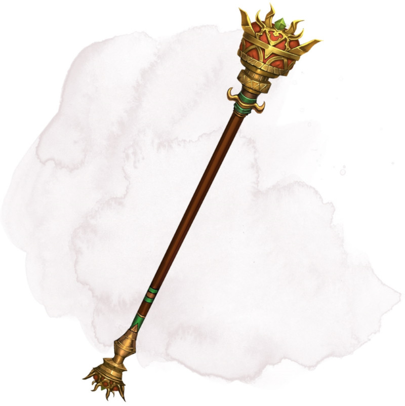

Sceptre de suzeraineté
[ Rod of Rulership ]
Sceptre, rare (nécessite un lien)
Vous pouvez utiliser une action pour brandir le sceptre et imposer l'obéissance à toutes les créatures de votre choix que vous pouvez voir et se trouvant dans un rayon de 36 mètres autour de vous. Chaque créature doit réussir un jet de sauvegarde de Sagesse DD 15 sous peine d'être charmée pendant 8 heures. Tant que vous la charmez de la sorte, la créature vous considère comme son chef en qui elle peut avoir toute confiance. Si vous ou l'un de vos compagnons faites du tort à la cible, ou si vous ordonnez à la cible de faire quelque chose contre sa nature, elle cesse d'être charmée par ce sceptre. Le sceptre ne peut être réutilisé avant le prochain lever de soleil.
Dungeon Master´s Guide (SRD)
